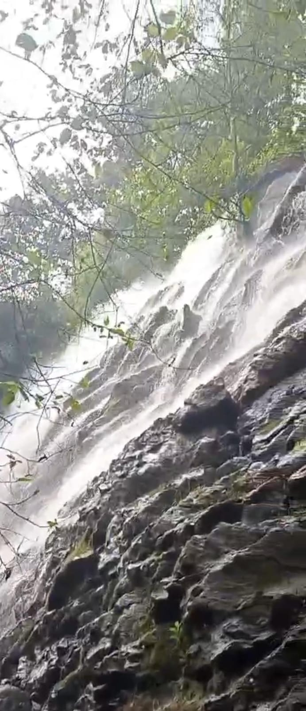
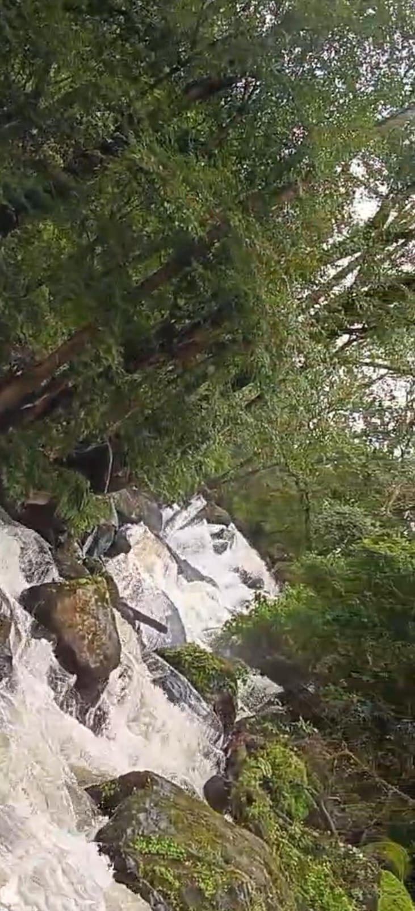

La Cascada Piedra del Molino es uno de los atractivos naturales de Valle de Bravo, Estado de México. Se encuentra en la zona de Avándaro y destaca por su belleza natural, sus corrientes de agua y el bosque que la rodea.

Ubicación Está ubicada en Avándaro, aproximadamente a 15 minutos del centro de Valle de Bravo. Sus aguas forman parte del río El Molino, que atraviesa zonas boscosas de la región.

Características naturales Está rodeada de árboles, vegetación y grandes rocas. Cuenta con una caída de agua que forma parte del río El Molino. Su entorno tiene un ambiente fresco y tranquilo. Es un espacio donde se puede apreciar la flora y fauna de la región. Su paisaje es especialmente atractivo durante la temporada de lluvias.